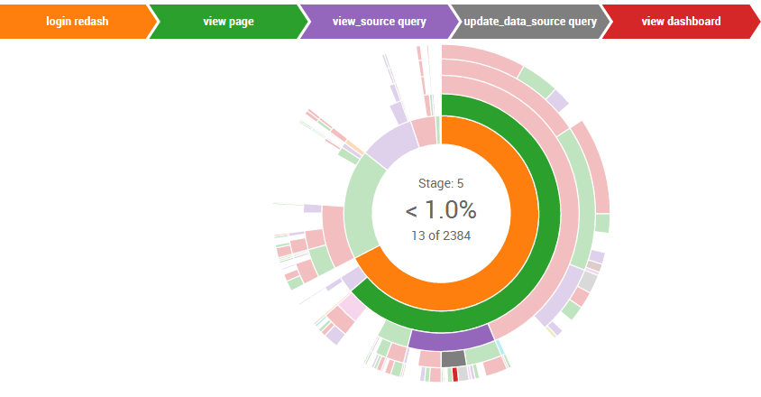

Sankey and Sunburst visualizations are awesome for understanding behavioral flows and sequences.
To create such a chain of events you’ll need to define the actions/event you want to examine, define how many events are in a sequence (max number of events) and assign chronological session numbers per user.
Here is a step by step example using the WITH clause in PostgreSQL.
We used the
WITHclause in this example -WITHclauses allow you to name a sub-query block, this way your query is modular (and sometimes runs faster), it can later be referred in the main query instead of making a large main query with many aliases,JOINs or other complexities. You can have multiple sub-queries, just be sure to have a comma between them.
-
Define the actions or events you want to examine - in this case we took all events and converted them into a readable string, each database has its way of saving event types etc. We also removed ‘view’ and ‘execute’ events as we want to investigate interactions and not just passive presence of users.
WITH events AS ( select user_id, action || ' ' || object_type as event_name, created_at as occurred_at from events where created_at > current_date - 30 and not ((action = 'view' and object_type='widget') or (action = 'view' and object_type='visualization') or (action = 'view' and object_type='query') or action = 'execute' or action ='execute_query') ), -
Define how many events are in a sequence - each e stands for an event, in this case, a sequence is 5 events and we count how many users completed each step and continued to the next one.
sequences as ( SELECT e1, e2, e3, e4, e5, COUNT(*) AS value -
Assign event numbers inside each session, each event is e+it’s number.
FROM ( SELECT user_id, session_number, MAX(CASE WHEN event_number = 1 THEN event_name ELSE NULL END) AS e1, MAX(CASE WHEN event_number = 2 THEN event_name ELSE NULL END) AS e2, MAX(CASE WHEN event_number = 3 THEN event_name ELSE NULL END) AS e3, MAX(CASE WHEN event_number = 4 THEN event_name ELSE NULL END) AS e4, MAX(CASE WHEN event_number = 5 THEN event_name ELSE NULL END) AS e5 -
Define event number within a session, chronologically.
FROM ( SELECT e.user_id, e.occurred_at, s.session_number, e.event_name, ROW_NUMBER() OVER (PARTITION BY e.user_id, s.session_number ORDER BY e.occurred_at) AS event_number -
Define a session start and end points and name a session as s.
FROM ( SELECT user_id, occurred_at AS session_start, COALESCE(LEAD(occurred_at,1) OVER (PARTITION BY user_id ORDER BY occurred_at),'2020-01-01') AS session_end, ROW_NUMBER() OVER (PARTITION BY user_id ORDER BY occurred_at) AS session_number FROM ( SELECT user_id, occurred_at, EXTRACT( 'EPOCH' FROM occurred_at - LAG(occurred_at,1) OVER (PARTITION BY user_id ORDER BY occurred_at) )/60 AS time_to_last_event FROM events ) bounds WHERE time_to_last_event > 30 OR time_to_last_event IS NULL ) s -
Join all the tables you need to join - in this case we join events with sequences (that we created so far) and group by events inside a session, order by creation date and limit it to keep things under speedy control.
JOIN events e ON e.user_id = s.user_id AND e.occurred_at >= s.session_start AND e.occurred_at < s.session_end ) x GROUP BY 1,2 ) z GROUP BY 1,2,3,4,5 ORDER BY 6 DESC LIMIT 100 ) -
SELECT *(sometimes it’s ok!) and you’re done.SELECT * FROM sequences
Voila:

 . Is it planned to be added any time soon? Many many thanks!
. Is it planned to be added any time soon? Many many thanks!{kind=link}